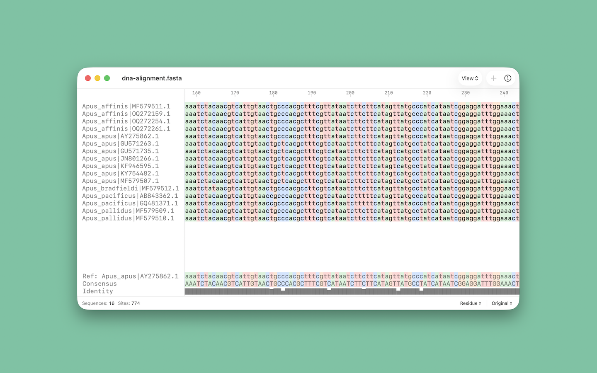

ApuSeq
Multiple sequence alignment viewer

Features
- Support for FASTA, CLUSTAL, CLUSTAL W, MUSCLE, and plain-text alignments
- Fast sequence viewing and editing
- Background coloring
- Reference and consensus panels
- Translation and reverse complement
- Local multiple sequence alignment using MAFFT
Requires macOS 26 or later.
Privacy
ApuSeq does not collect user data and does not use analytics. Alignment files are processed locally on the Mac.
Support
For help with supported file formats, common workflows, and contact information, see the support page.
GitHub